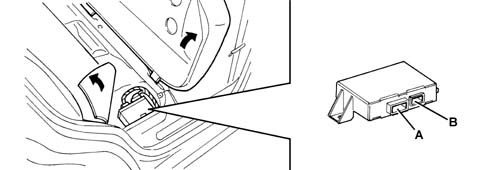
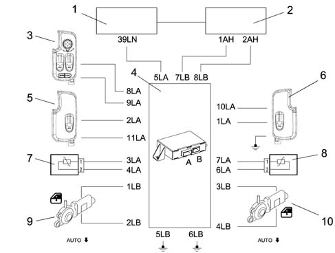

7010M rear electric windows
- Path
- Descriptions > 70 FITTINGS > 7010 PASSENGER COMPARTMENT REAR SIDE DOORS > 7010M rear electric windows
- Kind
- system description
- Applies to
- all engines; all production periods
- Interactive page
- https://sloeber94.github.io/elrnDB-a147/en/#/3022543
Applies to: all engines; all production periods
COMPOSITION
The luggage compartment node (NVB) is located under the rear seat and manages and operation of the rear electric windows.
OPERATION
The Luggage Compartment Node carries out the following functions:
- supports the functions described in the table;
- receives and sends information on the B-CAN line (e.g. diagnosis, commands)
- connects with the rear wiring.
View of connectors.

A - E09LA 18 way B - E09LB 8 way
Pin-out
CONNECTOR A
CONNECTOR B
Electric rear windows
The NVB control unit controls the operation of the left and right rear electric window motors which can operated both manually and automatically: the closing of the rear windows can only be activated manually, whilst they can be opened either manually or automatically.
Manual system
Mode is manual when the user starts and stops the system by hand by means of the control buttons. The motor stops when the buttons are released.
Automatic system
Mode is automatic when movement is started by pressing the control button for a period in excess of a preset value. In automatic mode, window arrest (electric power to window motor cut off) is brought about by:
- the window reaching the upper or lower end of its travel
- the safety system (anticrush)
- once a new raise or lower control has been pressed.
This is regulated by controlling motor current, which must be self-adaptive, and by managing the anticrush sensor.
In the case in question:
- the control unit does not operate when the buttons are pressed for less than 60 ms.
- manual movement is activated if the control key is pressed for between 60 ms and 300 ms (short control);
- automatic operation is activated if the control button is pressed for longer than 300 ms (long control)
Key on
Movement takes place as described in the table
Key off
Movement is only manual and timed by the NBC, which controls service relay 2 supplying the NPG and NVB nodes.
Note that service relay 2 is located on the facia control unit (CPL) - T13 - is active with the ignition key ON and deactivated temporarily during start-up.
If an INT signal is not received from the ignition, the NBC maintains service relay 2 supplying the windows and sun roof active and changes the timing for 3 minutes ± 10% but deactivates it immediately when one of the two front doors is opened.
If a window control (front or rear) is pressed within three minutes of controlling service relay 2, the NBC resets the timer for a further 3 minutes.
Control buttons
There are two control buttons on the rear doors; but the buttons located on the driver's front door can also be used, as described below.
Each time the window function control buttons are pressed, the buzzer in the NQS goes off as confirmation: this information is supplied via the CAN: it is then the task of the NQS to manage the duration and tone and when to activate the signal if there are simultaneous commands.
Disablement
Glass movement is disabled by:
- Vbatt = 16 V (re-enabled for Vbatt = 15.5 V)
- Vbatt = 10 V (re-enabled for Vbatt = 10.5 V)
The battery voltage level is supplied to the network by means of a specific message.
Safety sensors in rear door seals
These take the form of an electrical circuit in a sheath applied to the glass upper seal. The interface for the NVB control unit involves two inputs (signal and earth) from the sensors which are made up of a resistor with a value of 400 to 1800 ohms under normal conditions, i.e. when the glass does not compress the seal.
The NVB downloads information about the presence or absence of an obstacle when the window is closed (raised): in these conditions, the resistive signal is between 0 and 400 ohm.
As a consequence of this event, the control unit immediately interrupts the travel of the glass and reverses it.
Special software strategies are naturally also preset to handle changes in the electrical properties of the sensors due to wear, ageing etc.
Rear electric windows diagram
Wiring diagram

1 - Body computer node (NBC) 2 - Facia control unit (CPL) 3 - Driver's door node (NPC) 4 - Luggage Compartment Node (NVB) 5 - Left rear door electric windows control 6 - Right rear door electric windows control 7 - Left safety sensor seal 8 - Right safety sensor seal 9 - Left rear electric window motor 10 - Right rear electric window motor
Electric rear windows go ahead and control from driving seat
Electric rear windows control.
The rear windows (on 5 door versions only) may be controlled by the NPG once this mode has been selected using the 'REAR' button.
If the button is pressed, the NVB function is activated and the rear windows can be moved by operating the window switches on the NPG.
If no movement is made, the selection returns automatically to the front windows 20 minutes after the last window movement (NPG).
Each time the rear windows are operated, the rear window selection maintenance time is reset. To make a visual check, when the rear windows are selected, a LED is activated which stays on throughout the selection on the NVB.
If the front part of the button is pressed, the NPG function is operated and the front windows can be moved by operating the window switches on the NPG.
The function may be activated only if rear window inhibition status is not present.
Inhibition of rear window control from driver's side
The rear controls can be inhibited (protection) via a 'LOCK' rear movement button. The NPG downloads this switch and indicates the inhibition by means of an LED in the back of the switch and makes the status available to the network. The NVB does not allow the rear windows to be moved and turns off the control key lighting.
Luggage compartment node (nvb) additional functions
The NVB control unit enables the following functions only with options packages fitted:
- rear window closure from recirculation control;
- rear window closure from pollution sensor;
- rear window closure from remote control.
Window closure from recirculation control
The function is active with the ignition key ON, provided the electric window system is fitted with efficient anticrush seals. To sum up, when the NVB receives 'recirculation status' information from the climate control node NCL via the CAN, it controls the activation of the electric window actuators.
Closing wndows from pollution sensor
The function is active with the ignition key ON. The climate control system software is designed to activate recirculation mode if the air to be taken in to the vehicle passenger compartment is polluted. The climate control system node NCL sends a signal via the CAN to indicate that the recirculation is activated and the NVB activates the electric window actuators.
Closing windows from remote control unit
Because the body computer node (NBC) is responsible for managing central closure (AUTO CLOSE) and opening (AUTO OPEN) of the doors, it can also manage opening/closure of the windows (as well as the electric sunroof and courtesy lights) where this function is available.
The remote control unit is equipped with three buttons marked lock, unlock, boot and takes the form of a sending unit built into the key grip. It is fitted with a radio stage (433.92 Mhz) with a range of 20 m.
When a button is pressed, a variable code controlled by a mathematical algorithm (rolling code) is sent to a receiver built into the body computer (NBC).
The function is active with the ignition key off, provided the window system is equipped with an efficient anticrush seal.